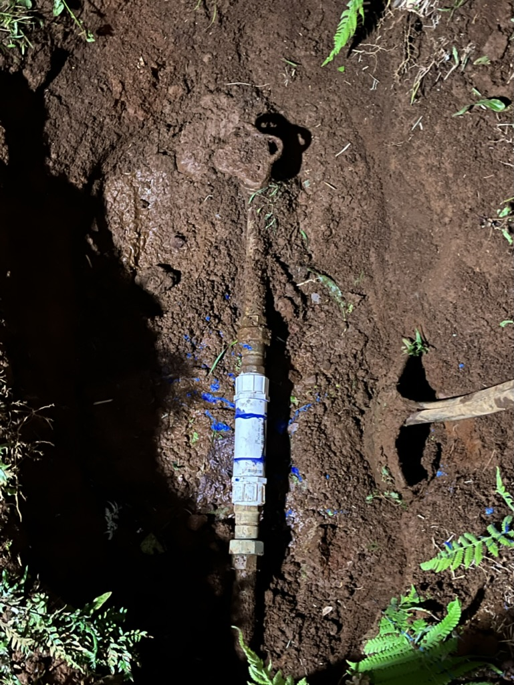
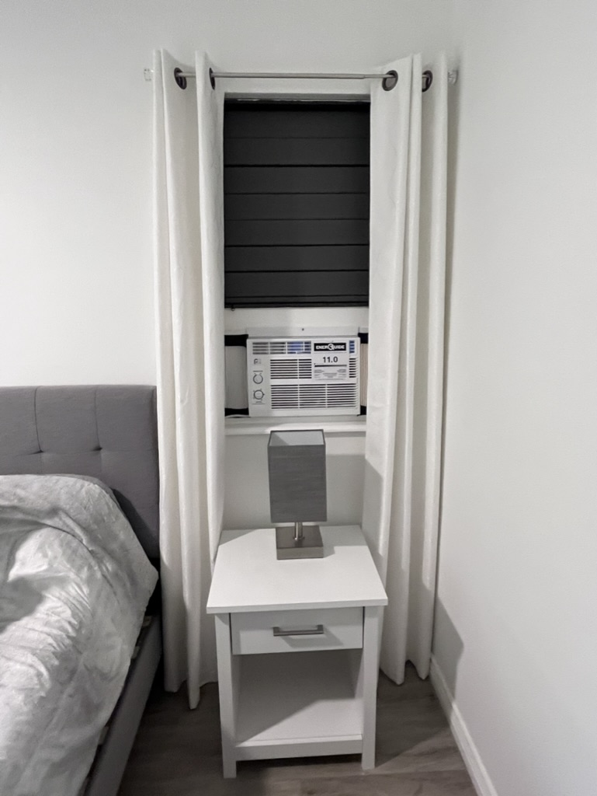

 All-around handyman...anything construction, plumbing, electrical, foundation, whatever...even free consultations. Specializes in gate-valve replacement & location. We've been in construction for over 20 years. Anything you want to do, we'll figure it out with you.
You need a window changed, a new door...how about your toilet needs to be replaced...need to put in an air conditioner? Call us, we can do it for you. 
Recently, we put up saddle racks, bridal, and halter shelving...hey, we even build stages for your entertainment.